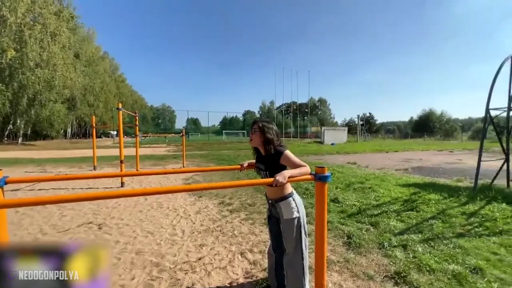

Раздел · Гости и коллабы
Вместе веселее.
Самые смешные моменты на канале случаются со стримерами: квесты, детский лагерь, водные полосы и целая неделя на вилле. Здесь — с кем и что произошло.

Лучшие моменты
Что было, когда собрались.
Короткие клипы из её нарезок —
понятны без многочасового эфира.
Большие проекты
Неделями в кадре.
Совместные проекты и поездки — полные нарезки на YouTube.
- Стримхата 192, ДубайНеделя на вилле со стримерами: evelone2004, ZLOYn, ekatze007 и другиесерия ↗
- ИзоляцияШесть дней совместного проекта с Даней и заданий от чатаTelegram ↗
- Нескучный лагерьСтримеры в детском лагере: Fasoollka, Follentass, Аринян19:18 ↗
- Самый страшный квестLEVA2K, Enzzai, MuhanJan15:20 ↗
- Водная полоса в ДубаеLEVA2K и ENZZAI10:39 ↗
- Сочи с FasoollkaПервый раз в Skypark и вейксёрфсерия ↗
ДальшеПутешествия
→